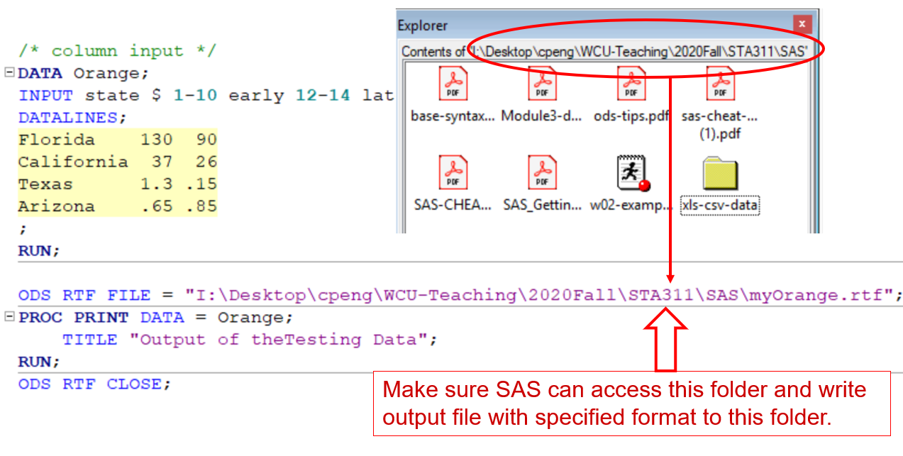
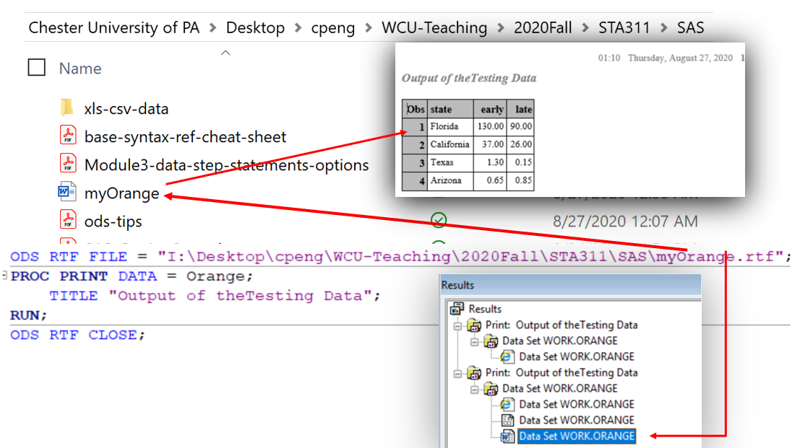
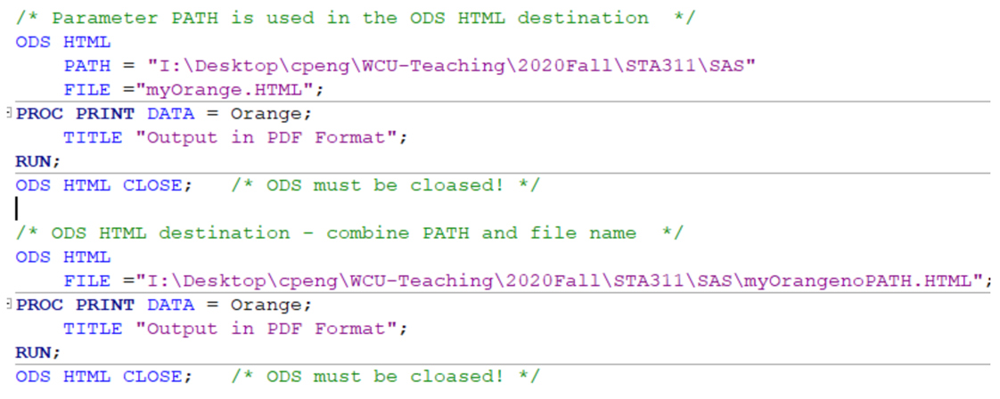
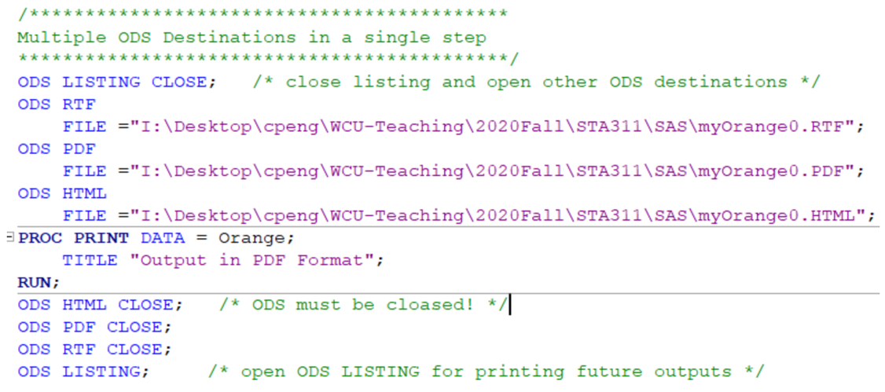
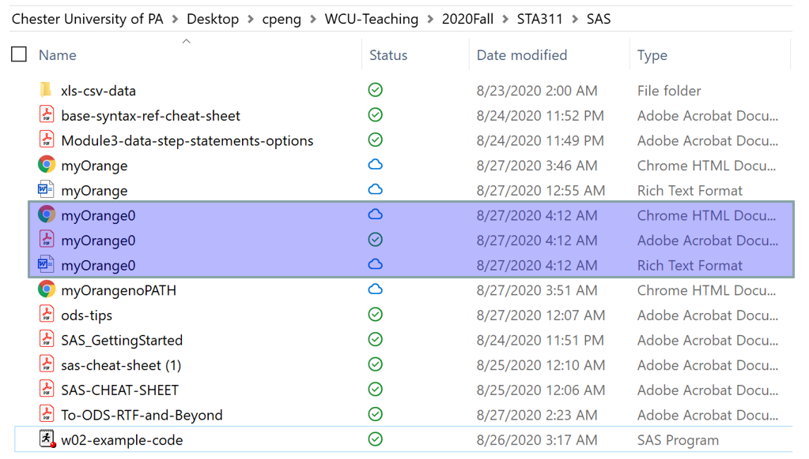
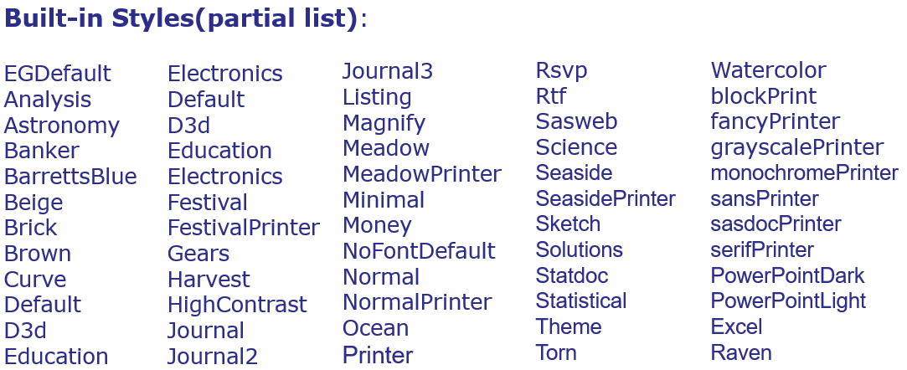
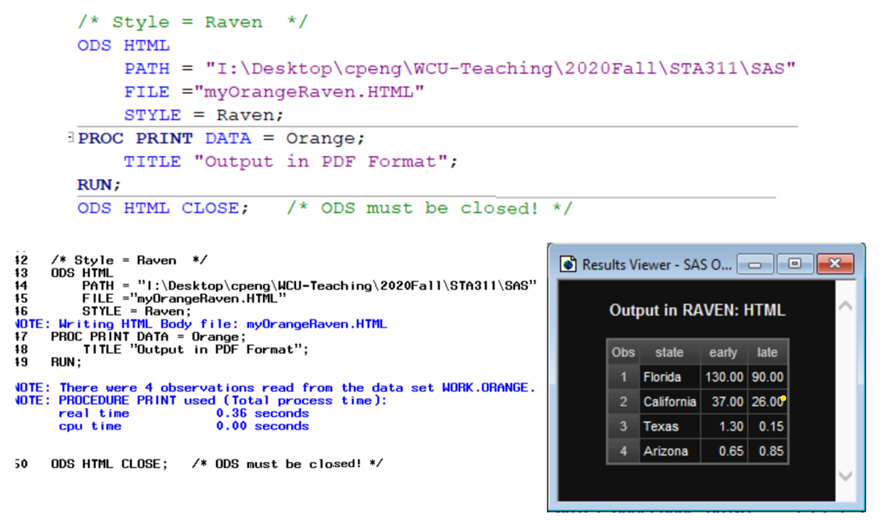
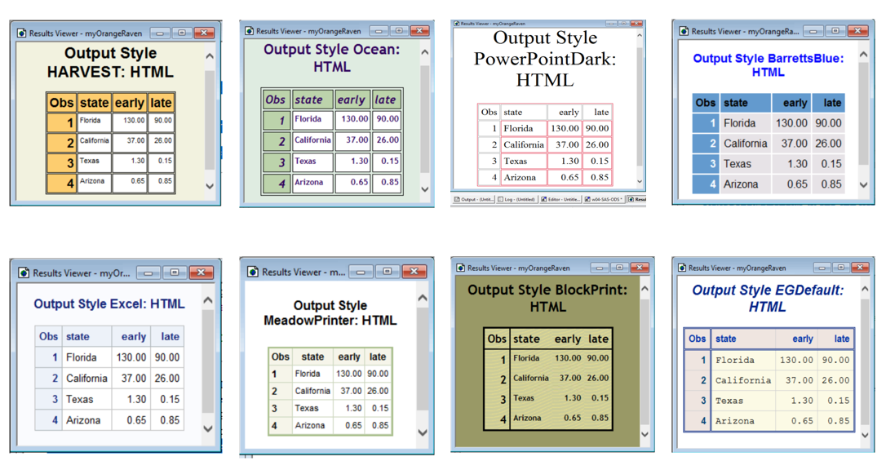

Chapter 13 Output Deliver System (ODS)
We have introduced three Base SAS statistical graphics procedures (SGPLOT, SGSCATTER, and SGPANEL) that use ODS Graphics and provide a convenient syntax for creating a variety of graphs from raw data or procedure output.
This chapter will introduce ODS in a little more detail. We will also learn how ODS manages procedure output and displays it in a variety of destinations, such as HTML and RTF.
13.1 ODS Basics
ODS creates the output in the form of output objects. Each output object is comprised of two components.
- The data component contains the results of a procedure or a DATA step.
- The table definition tells SAS how to render the results.
Once SAS creates all the output objects from an executed program, it then just needs to figure out where to send the objects.
SAS ODS destinations (i.e., file format) (0). LISTING (SAS default ODS destination) (1). HTML (2). OUTPUT (3). Printer Family format: PDF or PS (4). RTF
13.1.1 Some Technical Terms
- Destinations – Destinations are the file types and locations to which ODS routes the output from SAS.
- ODS can be used to route quality presentation files, suitable for publishing, to various destinations, including LISTING (default), HTML, RTF, PRINTER, and PDF.
- ODS can also store results in a SAS data set when we use the ODS OUTPUT statement.
- Objects – Output objects are created by ODS to store the formatted results of most SAS procedures. One can select output objects to tailor the results. An output object consists of
- the tabular data component from a SAS procedure.
- Formatting instructions provided by a table template that is unique to that SAS procedure.
- Styles – Styles define the presentation attributes of a report, such as font and color. ODS uses style definitions, or templates, to enhance the visual appearance of the output in those destinations that support styles. Note that styles do not apply to the LISTING and OUTPUT destinations.
13.1.2 SAS Default Destination: LISTING
The default ODS destination is LISTING. This is where SAS sends the output. This ODS destination is the standard output window.
If we choose a specific ODS destination other than LISTING and don’t want to print out anything in the output window. We should close this ODS destination using the command ODS LISTING CLOSE before opening other ODS destinations.
It is a good practice to keep LISTING open since it is more convenient when checking the output results and debugging the code.
13.2 ODS Syntax
The basic syntax of ODS is given by
ODS output-type
PATH path-name
FILE = Filename-and-Path
STYLE = Style-Name;
PROC some proc;
ODS output-type CLOSE;output-type- output file destination chosen from HTML, PDF, RTF, etc. The default is LISTING and is on. If we don’t want to print the outputs in the output window, we can close the default destination.PATHrepresents the statement used in the case of HTML output. In other types of output, we include the path in the file name.STYLErepresents one of the in-built styles available in the SAS environment. We will discuss different output styles later in more detail.
The following figure demonstrates a simple ODS application.

In the above example, the output file destination is RTF, and the output file PATH and FILE name are combined. We did not specify an output style, the default style was used. Since the default output destination LISTING was not closed, the results were also sent to the output window.
After executing the ODS code block, we can open the output file in the specified file location and view the content of the file as shown below.

13.3 Flexibility of ODS
This section demonstrates the flexibility of using ODS to generate different SAS output results.
13.3.1 HTML
The HTML format output is favorable in many cases particularly when the result is published on the web together with other results to give users a better experience when consuming the analytic outcomes. ODS can generate HTML outputs with different output styles to make HTML aesthetically better.
The following example shows how to generate ODS HTML outputs using PATH and FILE separately and jointly.

13.3.2 Multiple ODS Putputs
We can also generate multiple ODS outputs in a single data or procedure step. The following is an illustrative example that generates three different outputs at once.

In the above example, we close LISTING before opening other destinations. But LISTING was opened at the very end to allow the default destination for the future outputs. The ODS files were successfully generated and sent to the designated location.

13.4 ODS Styles
When we output information to a SAS ODS format, the tables, graphs, and text are defined with default colors and fonts. There are several built-in ODS styles that we can select. Each style is based on some theme or purpose.
Using these different styles appropriately will make analytic communications more effective and more professional. For example, when publishing the analysis results on the web page or creating web-based presentations, we can choose output styles that are consistent with the overall design of the web pages or the presentations in terms of background colors, font size/ families, etc.
The following is a partial list of ODS styles.

An example of Raven-style ODS output is given below.

Note that when creating styled ODS outputs in PDF or RTF, the combined PATH and FILE should be used. The standalone PATH and FILE method will NOT work for these two destinations. Since the default LISTING was not closed, the results were also printed out in the output window.
Finally, the following figure showcases a few styled ODS outputs with self-explanatory titles.

13.5 Learning Coding by Examples
This section gives more examples of ODS with a summary of the ODS. At the very end, an SAS MACRO was used to produce the showcases stylish ODS outputs in the previous section. Mode detailed discussion about SAS MACROs will be given in a later chapter.
/**************************************************
Topics: 1. ODS Basics - Opening and Closing ODS
2. ODS with Multiple Procedures
3. ODS OUTPUT Enhancements
4. Advanced ODS HTML - Enhanced Web Page
5. SAS ODS Graphics
Your permanent library should be something like this:
LIBNAME ods "\\Client\C$\cpeng\sta311\ods";
***************************************************/
DM 'CLEAR LOG';
DM 'CLEAR OUTPUT';
/****************************************************************************
Overview of Output Delivery System (ODS)
1. SAS output of procedure (including graphics) shows in the Results window.
Although SAS is creating files on the server (RamCloud) or a local computer
as you add to your results, these are effectively hidden from you in a
temporary folder within C:\temp\SAS Temporary Files\. The graphics will be
wiped out when exiting the SAS session.
2. The question is how to save graphics in the designated location, file's
ODS destination, and in the desired format automatically.
Format: The format of the output file can be chosen from listing, RTF (for
use in Word documents), pdf, and HTML.
ODS Destination: The formats of the output files corresponding to the ODS
LISTING(default), ODS RTF, ODS PDF, and ODS HTML destinations,
respectively.
Location: We can provide a physical location to store an output file in the
desired format.
ODS Syntax
ODS output-file-destination * file destinations: LISTING, RFT, PDF, HTML;
PATH path name
FILE = Filename and Path
STYLE = StyleName; *
PROC some procedures...
ODS output-file-destination CLOSE;
**********************************************************************/
OPTIONS PS = 58 LS = 72 NODATE NONUMBER;
LIBNAME odsout 'C:\STA311\ODS';
/** Working data sets **/
DATA PENN_GOLF;
INPUT @1 SID $3.
@4 Name $18. /* informat */
@23 Architect $16.
@40 Year
@45 Type $
@54 Par
Yards
Slope
USGA;
DATALINES;
102 Penn State Blue Willie Park,Jr. 1921 Public 72 6525 128 72.0
101 Toftrees Ed Ault 1968 Resort 72 7018 134 74.3
103 Centre Hills Alex Findlay 1921 Private 71 6392 128 71.2
104 Lewistown CC . Private 72 6779 125 72.3
105 State College Elks Lowell Erdman 1973 SemiPri 71 6369 123 70.9
106 Park Hills CC James Harrison 1966 SemiPri 70 6004 126 69.3
107 Sinking Valley CC Ed Ault 1967 SemiPri 72 6755 132 73.4
108 Williamsport CC A.W. Tillinghast 1909 Private 71 6489 131 71.9
109 Standing Stone GC Geoffrey Cornish 1973 SemiPri 70 6593 120 71.4
110 Bucknell GC 1960 SemiPri 70 6253 132 70.0
111 Mount Airy Lodge Hal Purdy 1972 Resort 72 7123 140 74.3
;
RUN;
/** By default, the ODS LISTING is open. So you will see the output **/
PROC PRINT DATA = PENN_GOLF;
RUN;
/***************************************************************************
Topic #1: ODS Basics - Opening and Closing ODS
1) ODS creates your output in the form of output objects. Each output
object is comprised of two components.
(a) The data component contains the results ?think about numbers
?of a procedure or a DATA step.
(b) The table definition tells SAS how to render the results
?think about structure.
2. Once SAS creates all of the output objects from an executed program,
it then just needs to figure out where to send the objects.
SAS ODS destinations
(1). LISTING (default output)
(2). Printer Family format: PDF or PS
(3). RTF
(4). HTML
****************************************************************************/
/*************/
/** Example 0: Default ODS destination - LISTING. It is open by default.
If you close the LISTING destination, The PROC PRINT procedure
will not print out anything in the output window. **/
ODS LISTING CLOSE; /* close the ODS LISTING, the log file will give
an error message */
PROC PRINT DATA = PENN_GOLF;
RUN;
/* Log File
WARNING: No output destinations are active.
NOTE: There were 11 observations read from the data set WORK.PENN_GOLF.
NOTE: PROCEDURE PRINT used (Total process time):
real time 0.00 seconds
cpu time 0.00 seconds
*/
/* We next open ODS LISTING and then print out the same data */
OPTIONS PS =30 LS = 120 NODATE NONUMBER; /* Adjust page size and line size
to make a better-looking output */
ODS LISTING; /* Open the ODS LISTING, the log file will give
NO error message */
PROC PRINT DATA = PENN_GOLF;
TITLE "Some Golf Courses in PENN";
RUN;
/****************************************************************/
/* Example 1: Opening and Closing ODS Destinations - PDF */
/* Need to specify the physical location to save the generated file with
an appropriate name and the correct file destination (extension). */
ODS LISTING CLOSE;
ODS PDF FILE = 'C:\STA311\ODS\golf00.pdf';
PROC PRINT DATA = PENN_GOLF NOOBS;
TITLE 'Some of the penngolf data set variables: PDF';
ID name;
VAR year type par yards;
RUN;
ODS PDF CLOSE; /* Always close the ODS destination after finishing
the current block */
/* Note: I did close ODS LISTING, When I ran the above block, a PDF file was
generated and sent to the folder. At the same time, the output was also
generated in the output window. */
ODS LISTING;
/****************************************************************/
/* Example 2: Opening and Closing ODS Destinations - HTML */
ODS HTML file = 'C:\STA311\ODS\golf0.html';
PROC PRINT DATA = PENN_GOLF NOOBS;
TITLE 'Some of the penngolf data set variables: HTML';
ID name;
VAR year type par yards;
RUN;
ODS HTML CLOSE;
/***************************************************************/
/* Example 3: Opening and Closing ODS Destinations - RTF */
ODS RTF file = 'C:\STA311\ODS\golf0.rtf';
PROC PRINT DATA = PENN_GOLF NOOBS;
TITLE 'Some of the penngolf data set variables: RTF';
ID name;
VAR year type par yards;
RUN;
ODS RTF CLOSE;
/*********************/
/*** IMPORTANT!!! ***/
/*********************/
ODS LISTING; /* It is a good practice to leave ODS LISTING open at the end
of a code block. */
/*******************************************/
/** Example 4. A more efficient approach:
We can also generate all three different file at the procedure**/
ODS LISTING CLOSE; /* close the listing destination before creating RTF,
HTML and PDF */
ODS RTF file = 'C:\STA311\ODS\golf01.rtf';
ODS HTML file = 'C:\STA311\ODS\golf01.HTML';
ODS PDF file = 'C:\STA311\ODS\golf01.pdf';
PROC PRINT DATA = PENN_GOLF NOOBS;
TITLE 'Some of the penngolf data set variables: Multiple ODS Destinations';
ID name;
VAR year type par yards;
RUN;
ODS PDF CLOSE;
ODS HTML CLOSE;
ODS RTF CLOSE;
ODS LISTING; /* Open this destination for the next output in the output window */
/***************************************************************************
Topic #2: ODS OUTPUT Enhancements
BODYTITLE -
STYLE = option: changes the appearance of the default HTML output by using
one of the many predefined style templates built into SAS.
SELECT statement: tells SAS the specific output objects that we want to display.
To select specific output objects, simply place an ODS SELECT statement
within the relevant procedure.
****************************************************************************/
/** Example 1: Bodytitle **/
ODS LISTING CLOSE; /* Close LOSTING before generating ODS output */
ODS RTF file = 'C:\STA311\ODS\bodytitle.rtf'
BODYTITLE; /* BODYTITLE option in the ODS RTF statement tells SAS to
instead put titles and footnotes in the main part of the RTF document. */
PROC PRINT DATA = penn_golf;* NOOBS;
TITLE 'Some Par 72 Pennsylvania Golf Courses';
ID name;
VAR year type yards;
WHERE par = 72;
RUN;
ODS RTF CLOSE;
ODS LISTING; /* Open LISTING for next LISTING outputs */
/**** Available STYLEs ****/
PROC TEMPLATE; /* This procedure will print out all available styles in the
output window */
LIST STYLES;
RUN;
/****************************************
2 Styles.Analysis Style
3 Styles.BarrettsBlue Style
4 Styles.BlockPrint Style
5 Styles.DTree Style
6 Styles.Daisy Style
7 Styles.Default Style
8 Styles.Dove Style
9 Styles.EGDefault Style
10 Styles.Excel Style
11 Styles.FancyPrinter Style
12 Styles.Festival Style
13 Styles.FestivalPrinter Style
14 Styles.Gantt Style
15 Styles.GrayscalePrinter Style
16 Styles.HTMLBlue Style
17 Styles.Harvest Style
18 Styles.HighContrast Style
19 Styles.HighContrastLarge Style
20 Styles.Journal Style
21 Styles.Journal1a Style
22 Styles.Journal2 Style
23 Styles.Journal2a Style
24 Styles.Journal3 Style
25 Styles.Journal3a Style
26 Styles.Listing Style
27 Styles.Meadow Style
28 Styles.MeadowPrinter Style
29 Styles.Minimal Style
30 Styles.MonochromePrinter Style
31 Styles.Monospace Style
32 Styles.Moonflower Style
33 Styles.Netdraw Style
34 Styles.NoFontDefault Style
35 Styles.Normal Style
36 Styles.NormalPrinter Style
37 Styles.Ocean Style
38 Styles.Pearl Style
39 Styles.PearlJ Style
40 Styles.Plateau Style
41 Styles.PowerPointDark Style
42 Styles.PowerPointLight Style
43 Styles.Printer Style
44 Styles.Raven Style
45 Styles.Rtf Style
46 Styles.Sapphire Style
47 Styles.SasDocPrinter Style
48 Styles.SasWeb Style
49 Styles.Seaside Style
50 Styles.SeasidePrinter Style
51 Styles.Snow Style
52 Styles.StatDoc Style
53 Styles.Statistical Style
54 Styles.Word Style
55 Styles.vaDark Style
56 Styles.vaHighContrast Style
57 Styles.vaLight Style
********************************************/
/***********************/
/** Example 2: Style **/
ODS LISTING CLOSE;
ODS HTML file = 'C:\STA311\ODS\meadow.html'
style = meadow; /** STYLE= option to tell SAS to use the meadow
style when displaying the HTML output **/
PROC PRINT DATA = penn_golf NOOBS;
TITLE 'Some of the penngolf data set variables';
ID name;
VAR year type par yards;
RUN;
ODS HTML CLOSE;
ODS LISTING;
/************************************************************/
/** Example 3: create a data set using ODS output statement**/
PROC SORT DATA = PENN_GOLF;
BY PAR;
RUN;
PROC MEANS DATA = PENN_GOLF;
BY par;
VAR yards;
TITLE 'Pennsylvania Golf Courses by Par';
ODS OUTPUT Summary = summout;
RUN;
ODS LISTING CLOSE;
ODS HTML file = 'C:\STA311\ODS\PowerPointLight.html'
style = PowerPointLight; /* Use a different ODS HTML style */
PROC PRINT DATA = summout NOOBS;
TITLE 'The summout data set';
RUN;
ODS HTML CLOSE;
ODS LISTING;
/************************************/
/** Example 4. SELECT - statement **/
PROC SORT DATA = penn_golf OUT = golfbypar;
BY par;
RUN;
ODS LISTING CLOSE;
ODS HTML file = 'C:\STA311\ODS\Statistical.html'
style = Statistical; /* Use a different ODS HTML style */
PROC MEANS data = golfbypar;
by par;
title 'Par 70 Golf Courses';
ODS SELECT Means.ByGroup1.Summary;
RUN;
ODS HTML CLOSE;
ODS LISTING;
/**************************************************************************
Topic #3: Advanced ODS HTML - Enhanced Web Page
(Optional)
When we create an HTML in the above topic 2, we simply open
the HTML destination using the HTML keyword in the ODS statement. Simple enough!
In this topic, we'll extend what we learned by:
1. creating HTML output from multiple procedures at once;
2. creating HTML output with a table of contents; and
3. using options to specify links and paths.
ODS HTML Specifications:
1. BODY= option tells SAS where we want to store the HTML output generated
from the subsequent PRINT and REPORT procedures.
2. CONTENTS= option tells SAS where we want to store the table of contents.
3. FRAME= option gives SAS a place to store the HTML page containing
the integrated table of contents and body file.
Note that the FRAME= option and the CONTENTS= option go together. That is,
if we include the FRAME= option in your ODS HTML statement, you must also
include the CONTENTS= option.
************************************************************************/
ODS LISTING CLOSE;
ODS HTML BODY = 'C:\STA311\ODS\golf3.html'
CONTENTS = 'C:\STA311\ODS\golf3toc.html'
FRAME = 'C:\STA311\ODS\golf3frame.html';
/* PROC PRINT */
PROC PRINT DATA = penn_golf NOOBS;
TITLE 'Some Par 72 Pennsylvania Golf Courses';
ID name;
VAR year type yards;
WHERE par = 72;
RUN;
/* PROC REPORT --- will study PROC REPORT next week, more details to come.... */
PROC REPORT DATA = penn_golf NOWINDOWS HEADLINE HEADSKIP;
TITLE 'Average Size of Some PA Courses';
COLUMN type par yards;
DEFINE type /GROUP;
DEFINE yards / ANALYSIS MEAN FORMAT = 6.1 WIDTH = 10;
DEFINE par / ANALYSIS MEAN FORMAT = 4.1 WIDTH = 10;
RUN;
ODS HTML CLOSE;
ODS LISTING;
/******************************************************
Topic #4: ODS Graphics
*******************************************************/
/* Woeking dataset taken from James Forbes' Altimeter (1857)
Bringing water to a boil throughout the Alps */
DATA forbes;
INPUT id boil pressure;
LABEL boil = "Boiling Point (degrees F)"
pressure = "Air Pressure (inches Hg)";
DATALINES;
1 194.5 20.79
2 194.3 20.79
3 197.9 22.40
4 198.4 22.67
5 199.4 23.15
6 199.9 23.35
7 200.9 23.89
8 201.1 23.99
9 201.4 24.02
10 201.3 24.01
11 203.6 25.14
12 204.6 26.57
13 209.5 28.49
14 208.6 27.76
15 210.7 29.04
16 211.9 29.88
17 212.2 30.06
;
RUN;
/* Titles affect all forms of output */
TITLE "Boiling Point and Altitude";
TITLE2 "James D. Forbes, 1857";
/**** Example 1 ****/
/* RTF output, for MS Word documents */
ODS RTF FILE ="C:\STA311\ODS\graphics-example.rtf";
PROC SGPLOT DATA = forbes;
SCATTER Y = boil X= pressure;
RUN;
ODS RTF CLOSE;
/**** Example 2 ****/
/* PDF output, for Acrobat documents */
ODS PDF FILE = "C:\STA311\ODS\graphics-example.pdf";
PROC SGPLOT DATA = forbes;
SCATTER Y = boil X = pressure;
RUN;
ODS PDF CLOSE;
/**** Example 3 ****/
/* PNG output, for a variety of uses */
ODS HTML GPATH = "C:\STA311\ODS";
PROC SGPLOT DATA = forbes;
SCATTER Y = boil X = pressure;
RUN;
ODS HTML CLOSE;
* No need to close the HTML destination;
/**** Example 4 ****/
/* As a final note, remember that you could
save output from a single PROC to more
than one output destination, simultaneously.
We could have done all three like this:
*/
ODS RTF FILE="C:\STA311\ODS\graphics-example-02.rtf";
ODS PDF FILE = "C:\STA311\ODS\graphics-example-02.pdf";
ODS HTML GPATH = "C:\STA311\ODS";
PROC SGPLOT DATA = forbes;
SCATTER Y = boil X = pressure;
RUN;
ODS RTF CLOSE;
ODS PDF CLOSE;
/***********************************************************************
Topic #5: Other format graphics with ODS
(1) Saving multiple graphs using the sashelp.class data to draw
scatterplots of weight by age and weight by height. Save these in
all three formats discussed here.
(2) JPG files Look up the ODS HTML command and find the DEVICE option
(Base SAS - Output Delivery System User's Guide - ODS Statements).
Save files from exercise (1) in jpg or jpeg format.
***********************************************************************/
/******************/
/* Example 1
*******************/
TITLE;
ODS RTF FILE = "C:\STA311\ODS\graphics-example-03.rtf";
ODS PDF FILE = "C:\STA311\ODS\graphics-example-03.pdf";
ODS HTML GPATH = "C:\STA311\ODS\";
PROC SGPLOT DATA = sashelp.class;
SCATTER Y = weight X = age;
PROC SGPLOT DATA = sashelp.class;
SCATTER Y = weight X = height;
run;
ODS RTF CLOSE;
ODS PDF CLOSE;
/********************
* Example 2
*********************/
ODS HTML GPATH = "C:\STA311\ODS\" DEVICE = jpg;
PROC SGPLOT DATA = sashelp.class;
SCATTER Y = weight X = age;
PROC SGPLOT DATA = sashelp.class;
SCATTER Y = weight X = height;
run;
/********************************************
** Optional Topic: MACRO;
*********************************************/
/*** Sample ODS Styles in HTML *****
Since I repeat the same process to generate outputs in different ODS styles,
I will write a SAS MACRO to avoid copying and pasting and make several MACRO
calls to accomplish our task. Writing SAS MACROs is outside the scope of this
class.
*****************************************************************************/
/* column input */
DATA Orange; /* stored in the temporary library */
INPUT state $ 1-10 early 12-14 late 16-18;
DATALINES;
Florida 130 90
California 37 26
Texas 1.3 .15
Arizona .65 .85
;
RUN;
%MACRO ODSSTYLE(STYLE = );
ODS HTML
FILE ="C:\STA311\ODS\myOrange&STYLE..HTML"
STYLE =&STYLE;
PROC PRINT DATA = Orange;
TITLE "Output Style &STYLE: HTML";
RUN;
ODS HTML CLOSE; /* ODS must be closed! */
%MEND;
%ODSSTYLE(STYLE=HARVEST);
%ODSSTYLE(STYLE=Ocean);
%ODSSTYLE(STYLE=MeadowPrinter);
%ODSSTYLE(STYLE=PowerPointDark);
%ODSSTYLE(STYLE=Excel);
%ODSSTYLE(STYLE=BlockPrint);
%ODSSTYLE(STYLE=BarrettsBlue);
%ODSSTYLE(STYLE=EGDefault);